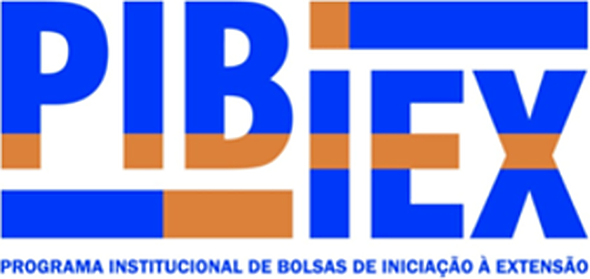

Aulas e materiais
Cronograma por módulo e materiais (slides, PDFs, vídeos e links) abertos em um leitor próprio, sem instalar nada.
Para alunos e professores do curso de extensão em Inteligência Artificial de Ponte Alta do Tocantins: aulas e materiais, atividades com correção, desafios, frequência e comunicação da turma em um só lugar, com acessibilidade em Libras e proteção de dados desde o projeto.
O que a plataforma faz
Cronograma por módulo e materiais (slides, PDFs, vídeos e links) abertos em um leitor próprio, sem instalar nada.
O aluno escreve a resposta na hora ou envia arquivo e link. O professor corrige com nota, horas e comentário.
Desafios semanais que rendem pontos, com ranking da turma e cinco níveis, de Iniciante a Mestre.
Problemas práticos, banco de prompts bem estruturados e um comparador que põe lado a lado as respostas de Gemini, Llama e gpt-oss.
Chamada aberta pelo professor, com código e tempo limite. Horas somadas por aluno e relatório pronto para o certificado.
Avisos que expiram, enquetes com resultado ao vivo, chat da turma, conversas privadas e galeria de projetos.
Mascote oficial
O Seri é o mascote oficial do PIBIEX Digital: uma seriema, ave do cerrado do Tocantins. A seriema de verdade anda pelo chão e fica atenta ao que acontece ao redor. É isso que queremos de um guia: alguém que caminha ao lado de quem aprende. Por isso o Seri ajuda nos estudos e diz onde fica cada coisa na plataforma.
Você sabia?
Seriema vem do tupi e lembra “crista levantada”, por causa das penas no alto da cabeça.
O canto da seriema é bem alto e pode ser ouvido de longe. Ela sabe se fazer ouvir!
Seriemas de verdade são cinza-amarronzadas. Eu sou especial: nasci azul!
Na prática
O aluno tem o caminho do curso na frente. O professor tem a lista do que pede atenção hoje.
Para o aluno
Para o professor
Demonstração
Uma turma de exemplo, com atividades para enviar, chamada para abrir e trabalhos para corrigir. Tudo roda no seu navegador, sem cadastro e sem enviar dados.
Feita com cuidado
Grande parte dos alunos é menor de idade. Por isso acessibilidade e privacidade não são um detalhe: fazem parte do projeto.
Leia a Política de Privacidade, veja a Transparência e o Termo de Uso.
Perguntas frequentes
Alunos e equipe do curso de extensão em Inteligência Artificial. Não existe cadastro aberto ao público: o professor cadastra cada aluno, e o usuário e a senha são entregues pelo curso.
Dá. A demonstração abre a plataforma com uma turma de exemplo, como aluna ou como professor. Tudo roda no seu navegador: nenhum dado é enviado e nada real aparece.
Pelo botão Entrar, com o usuário e a senha fornecidos pelo curso. No primeiro acesso a senha é trocada e o Termo de Uso é aceito. Quem esqueceu os dados usa a opção "Esqueci usuário/senha" na tela de login.
Não é preciso instalar nada: funciona no navegador do celular ou do computador. As telas se adaptam ao tamanho do aparelho, e as páginas são leves para abrir mesmo com internet mais lenta.
A plataforma coleta só o necessário, não tem anúncios nem vende dados, e cada pessoa vê apenas o que é seu. O aluno pode baixar uma cópia dos seus dados e pedir correção ou exclusão. Veja a Política de Privacidade e a página de Transparência.
Sim. Há Libras com o VLibras, leitura em voz alta, alto contraste, texto maior, cores suaves ou em cinza, altura da linha, fonte de leitura fácil e uso completo pelo teclado. O botão de acessibilidade está em todas as páginas.
Ela foi desenvolvida por Marciel Gomes Lima Rodrigues, bolsista de TADS, para apoiar o curso de IA em Ponte Alta do Tocantins. É um projeto independente e não é um site oficial da UNITINS. Conheça mais na página Sobre.
O programa
Instituição
A UNITINS é uma instituição pública de ensino superior do Estado do Tocantins, criada em 1990 e sediada em Palmas. Desde 2016, é uma autarquia estadual de regime especial e adota o nome Universidade Estadual do Tocantins.
Atua com ensino, pesquisa e extensão universitária, levando formação e ações de impacto social a diferentes regiões do estado.
Palmas · Tocantins
Programa
O PIBIEX é um programa da UNITINS que concede bolsas a estudantes de graduação para que atuem em ações de extensão universitária, fortalecendo a relação entre a universidade e a sociedade.
Em Ponte Alta do Tocantins, um dos projetos do programa é um curso de extensão em Inteligência Artificial, que usa a plataforma PIBIEX Digital.
Extensão universitáriaPlataforma
O PIBIEX Digital é a plataforma web que organiza o curso: conteúdo por módulo, atividades, desafios semanais, frequência, notas e comunicação com a turma.
Foi desenvolvida de forma independente por um bolsista do curso de TADS da UNITINS. Não é um site oficial da UNITINS.
Independente · não oficialPonte Alta do Tocantins
O PIBIEX Digital é voltado principalmente para estudantes das terceiras séries do ensino médio de Ponte Alta do Tocantins, cidade onde o projeto é desenvolvido. O objetivo é levar conhecimento em Inteligência Artificial pra essa comunidade, com acesso prático a uma tecnologia que normalmente fica distante da realidade das escolas da região.
Quem faz acontecer
Desenvolvedor da plataforma · Bolsista de TADS
Aluno do curso de Tecnologia em Análise e Desenvolvimento de Sistemas (TADS) da UNITINS e bolsista responsável por colocar o PIBIEX Digital em prática em Ponte Alta do Tocantins. Esta plataforma é de autoria e responsabilidade dele: foi desenvolvida por iniciativa própria, para apoiar o seu projeto, e não é um site oficial da UNITINS.
Acesse com o usuário e a senha fornecidos pelo curso. Quer entender melhor como tudo funciona? Leia a página Sobre.